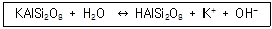

유기농업기사 (2010-05-09 기출문제)
1과목: 재배원론
1. 일반적으로 작물의 생육에 적합한 토양의 3상 분포로 가장 적정한 것은?
- 고상 50%, 액상 30%, 기상 20%
- 고상 60%, 액상 15%, 기상 25%
- 고상 70%, 액상 15%, 기상 15%
- 고상 80%, 액상 15%, 기상 5%
(정답률: 알수없음)

2. 어느 작물의 요수량이 500이라면 단위중량 1g의 건물(乾物)은 생산하는데 소비된 물의 양은?
- 0.5kg
- 5kg
- 50kg
- 500kg
(정답률: 알수없음)
3. 이산화탄소의 농도를 높여서 작물의 증수를 꾀하는 방법은?
- 엽면시비
- 질산시비
- 탄산신비
- 표층시비
(정답률: 알수없음)
4. 벼의 냉해에 대한 설명으로 틀린 것은?
- 저온에 놓이면 동화와 전류작용이 감퇴한다.
- 저온과 병해의 발생은 상관관계가 없다.
- 자포니카벼의 장해형 냉해는 기온 17℃이하에서 나타난다.
- 작물을 저온에 순화시킴으로써 내랭성을 증가시킬 수 있다.
(정답률: 70%)
5. 농작물의 수량 극대화를 위한 수량의 삼각형에 대한 설명으로 가장 적합한 것은?
- 농작물의 수량을 최대로 올리려면 재배품종, 토양 및 재배방법의 조화가 중요하다.
- 농작물의 수량이 최대로 되려면 품종, 재배환경 및 재배기술이 동등하게 적용되어야 한다.
- 농작물의 수량이 최대로 되려면 유전성이나 재배환경 보다 알맞은 재배기술의 적용에 더 큰 비중을 두어야 한다.
- 농작물의 수량 극대화를 위해서는 재배환경이나 재배기술보다 유전성이 우수한 품종의 선택에 더 큰 비중을 두어야 한다.
(정답률: 알수없음)
6. 다음 중 산성토양에서 가장 결핍되기 쉬운 성분은?
- Fe
- P
- Mn
- Zn
(정답률: 알수없음)
7. 정지(整地)작업에 해당되지 않는 것은?
- 복토
- 작휴
- 쇄토
- 진압
(정답률: 34%)
8. 작물의 도복을 방지하기 위한 대책으로 거리가 먼 것은?
- 인산, 칼륨, 규산의 시용량을 늘린다.
- 이나벤파이드를 처리한다.
- 질소를 추가로 시용하여 생장량을 크게 한다.
- 키가 작고 대가 강한 품종을 선택한다.
(정답률: 100%)
9. 기지(忌地)의 발생원인 중에서 시설재배 시 가장 크게 문제가 되고 있는 것은?
- 연작으로 인한 토양비료분의 일반적인 수탈
- 천근성 작물의 연작으로 인한 토양물리성 약화
- 다비 연작으로 인하여 작토층에 과잉 집적되는 염류
- 동일작물의 다비 연작으로 인한 특정잡초의 발생과 번성
(정답률: 알수없음)
10. 작물의 분류법 중 작물을 재배하는 데 생육적온 등 유용한 정보를 가장 많이 얻을 수 있는 분류법은?
- 식물학적 분류
- 일반적 분류
- 생태적 분류
- 경영적 분류
(정답률: 알수없음)
11. 벼 직파재배와 비교할 때 육묘 이앙재배의 장점이 아닌 것은?
- 도복경감
- 종자절약
- 용수절약
- 노력절감
(정답률: 알수없음)
12. 다음 중 인위적 돌연변이의 유도효과가 가장 큰 방사선은?
- α 선
- β 선
- γ 선
- δ 선
(정답률: 80%)
13. 동상해의 재배적 대책으로 틀린 것은?
- 맥류는 답압을 한다.
- 채소와 화훼류는 보온재배를 한다.
- 맥류재배에서 이랑을 세워 뿌림골을 깊게 한다.
- 맥류재배에서 파종시기를 늦추고 추운 곳에서는 파종량을 줄인다.
(정답률: 알수없음)
14. 추락현상(秋落現象)과 관계가 먼 것은?
- 철부족
- 수량감소
- 벼도열병의 발생
- 황화수소에 의한 벼 뿌리의 손상
(정답률: 알수없음)
15. 작물의 내적 균형의 지표로 흔히 사용되는 것은?
- G-D balance
- LAD(Leaf area density)
- GDD(Growing degree day)
- RQ(Respiratory quotient)
(정답률: 알수없음)
16. 1m2의 현미 무게가 1kg이고 이때 현미의 수분함량이 17%이다. 수분함량이 15%일 때 10a의 현미수량은?
- 약 293kg
- 약 488kg
- 약 512kg
- 약 976kg
(정답률: 알수없음)
17. 채소류 육묘 시 인공상토 사용의 유리한 점이 아닌 것은?
- 병과 잡초관리에 유리하다.
- 사용 후 재활용이 매우 용이하다.
- 같은 품질의 상토를 계속 만들 수 있다.
- 일반 토양보다 빨리 자라게 할 수 있는 양분을 첨가할 수 있다.
(정답률: 59%)
18. 방사성 동위원소의 농업적 이용에 있어 방사선의 어떤 면을 가장 많이 이용하는가?
- 이온화작용
- 사진작용
- 형광작용
- 맹아발육촉진
(정답률: 67%)
19. 단명종자로만 나열된 것은?
- 메일, 고추, 양파, 토당귀
- 벼, 쌀보리, 완두, 콩
- 오이, 가지, 배추, 녹두
- 벼, 오이, 고추, 양파
(정답률: 알수없음)
20. 다음 중 벼의 지상부에 대한 지하부의 건물중 비율이 가장 높은 시기는 ?
- 분얼초기
- 신장기
- 출수기
- 등숙기
(정답률: 70%)
2과목: 토양비옥도 및 관리
21. 일반적인 간척지 토양관리방법으로 거리가 먼 것은?
- 규산증시
- 암거배수
- 객토
- 소석회시용
(정답률: 40%)
22. 토양의 전용적밀도(bulk density)가 1.8g/cm3일 때 75cm3용적에 들어 있는 건조토양의 질량은?
- 135g
- 42g
- 36g
- 0.024g
(정답률: 30%)
23. 분산된 토립은 식물에 필요한 양분을 간직하고 있어서 유수에 의해 침식될 때 이러한 양분도 없어지게 된다. 이러한 토양침식을 무엇이라 하는가?
- 우곡침식(雨谷浸蝕)
- 비옥도침식(肥沃度浸蝕)
- 평면침식(平面浸蝕)
- 유수침식(流水浸蝕)
(정답률: 알수없음)
24. Mg과 Ca을 동시에 공급할 수 있는 석회비료는?
- 생석회
- 석회석
- 소석회
- 석회고토
(정답률: 알수없음)
25. 토양에서 유기모재(有機母材)의 근본이 되며 부식 중에 많이 함유된 물질은?
- 왁스류
- 리그닌
- 당질
- 헤미셀루로오스
(정답률: 알수없음)
26. 토양에 유기물이 많을 경우 예상할 수 있는 현상이 아닌 것은?
- 토양구조의 안정성 증가
- 토양의 전용적밀도 증가
- 토양 수분보유능력 증가
- 토양 통기성 증가
(정답률: 알수없음)
27. 유기물의 분해속도에 대한 설명으로 옳은 것은?
- 물을 댄 논 보다 밭에서 느리다.
- 유기물에 페놀함량이 많으면 느리다.
- 중성보다 강산성에서 빠르다.
- 탄질률 100인 것이 20인 것보다 빠르다.
(정답률: 67%)
28. 토층의 배수불량 상태에서 강회색화(强灰色化) 작용을 나타내는 기호는?
- Bx
- Bg
- Bir
- Bt
(정답률: 알수없음)
29. 토양의 색(soil color)을 나타내는 색의 3속성은?
- 색상, 명도, 채도
- 색상, 명도, 광도
- 광도, 명도, 채도
- 채도, 광도, 색상
(정답률: 알수없음)
30. 식물뿌리와 공생관계를 형성하는 균으로 ‘사상균뿌리’ 라는 의미를 지닌 균은?
- 근류균
- 방선균
- 균근균
- 효모
(정답률: 알수없음)
31. 담수되 논포양의 생물적, 화학적 특성 변화를 옳게 설명한 것은?
- 혐기성균의 활동이 감소한다.
- 산성인 토양은 pH가 더 낮아진다.
- Mn과 Fe의 용해도가 증가한다.
- 토양유기물의 분해가 증가한다.
(정답률: 알수없음)
32. 염류집적이 문제시되는 시설재배지의 토양관리방법으로 가장 거리가 먼 것은?
- 심경
- 배수
- 흡비작물재배
- 칼슘증시
(정답률: 알수없음)
33. 토양 내 작물이 이용할 수 있는 유효수분에 대한 설명으로 틀린 것은?
- 일반적으로 포장용수량과 위조계수 사이의 수분함량이며 토성에 따라 변한다.
- 식양토가 사양토보다 유효수분의 함량이 크다.
- 부식함량이 증가하면 일정 범위까지 유효수분은 증가한다.
- 토양 내 염류의 역할은 위조계수를 낮추는 것이다.
(정답률: 79%)
34. 풍식(wind erosion)에 대한 설명으로 옳은 것은?
- 풍식은 건조지역 보다 습윤지역에서 잘 일어난다.
- 우리나라에서는 해안 모래바닥에서 주로 일어난다.
- 풍식의 정도는 바람의 속도에 비례한다.
- 토양입자는 물에서 보다 공기 중에서 입자 상호간 충돌이 많다.
(정답률: 70%)
35. 토양침식을 방지하는 방법으로 효율성이 가장 낮은 것은?
- 피복재배
- 등고선재배법
- 건초류의 표면피복
- 경운 및 객토
(정답률: 40%)
36. 미국농무부법(USDA법)에 의한 자갈(gravel)의 입경기준으로 옳은 것은?
- 2.0mm 이상
- 2.0 ~ 1.0mm
- 1.0 ~ 0.5mm
- 0.5mm 이하
(정답률: 알수없음)
37. 질소성분 100kg을 토양에 처리하여 작물에 회수된 질소량이 50kg이었고, 시비하지 않은 토양에서는 작물로 20kg의 질소가 회수되었다. 이때 이 질소비료의 질소이용효율(nitrogen use efficiency)은?
- 50%
- 20%
- 30%
- 70%
(정답률: 알수없음)
38. 토양 pH와 인산의 유효도 관계에 대한 설명으로 옳은 것은?
- pH는 인산의 유효도에 영향을 미치지 않는다.
- pH가 낮을수록 인산의 유효도는 높아진다.
- pH가 중성부근일 때 인산의 유효도가 가장 높다.
- pH가 높을수록 인산의 유효도는 높아진다.
(정답률: 37%)
39. 다음 반응식을 나타내는 학술용어는?

- 산화(Oxidation)
- 가수분해(Hydrolysis)
- 수화(Hydration)
- 키레이션(Chelation)
(정답률: 알수없음)
40. 제주도 토양의 모암인 현무암을 바르게 설명한 것은?
- 지하 깊은 곳에 잇는 고온으로 용융된 암장이 지표면에 분출되거나 지각 중에 도입되어 냉각 고결된 암석
- 지표면에서 냉각된 반점질이거나 비점질의 심성암
- 화산암으로서 반려암과 같은 성분으로 되어 있으며 암색을 띠는 세립질의 치밀한 염기성암
- 중성화성암으로서 주성분은 사장석이며 때로는 각람석과 석영을 함유하는 중점질의 식질토양
(정답률: 40%)
3과목: 유기농업개론
41. Codex 가이드라인이 규정하고 있는 유기식품의 내용이 아닌 것은?
- 유기사료에 의한 가축사양
- 가축복리 고려
- 공장형농법에서 나온 축산분뇨의 사용
- 녹비작물과 두과작물 재배
(정답률: 91%)
42. 두고 녹비작물 재배에 대한 설명으로 틀린 것은?
- 경운, 파종, 수확 및 토양 내 혼입의 작업에 노동력이 필요한 집약적 활동이다.
- 녹비작물의 효과는 단기간보다 장기간에 걸쳐 서서히 나타난다.
- 사료 또는 식량자원으로 활용이 가능하다.
- 주작물과 질소 경합을 한다.
(정답률: 알수없음)
43. 벼 물바구미의 방제방법으로 볼 수 없는 것은?
- 월동 성충의 피해를 회피할 수 있는 재배시기를 선택한다.
- 피해를 입었던 논은 가을갈이 후 담수한다.
- 유효경이 확보된 논은 단수하여 건답상태를 유지한다.
- 피해를 입었던 논의 볏짚은 잘게 잘라서 생짚으로 논에 시용한다.
(정답률: 82%)
44. 벼 유기재배에서 우리 또는 우렁이를 활용하는 1차적 목적으로 가장 적합한 것은?
- 수량증대
- 잡초방제
- 토양비옥도증진
- 도복방지
(정답률: 알수없음)
45. 유기농업에서는 화학비료를 대신하여 유기물을 사용하는데 유기물의 주된 기능이 아닌 것은?
- 완충력 증대
- 미생물번식조장
- 보수 및 보비력증대
- 지온 감소
(정답률: 알수없음)
46. 유기농법으로 토양을 개량시켰을 때의 장점이 아닌 것은?
- 물리적 개량으로 토양에 공기와 수분의 침투가 용이하여 뿌리 증식이 왕성해진다.
- 화학적 개선으로 토양이 중성에 가까워지면서 작물의 양분흡수와 생육이 양호해진다.
- 유기질비료를 통하여 오염물질이 많이 투입되어 작물에까지 잔류독성함량이 많아진다.
- 미생물상의 개선으로 토양의 유효균이 증식되 면서 병균활동을 억제시킨다.
(정답률: 82%)
47. 유기농업에서 이용할 수 있는 무농약 토양소독법과 가장 거리가 먼 것은?
- 증기이용법
- 소토법
- 태양열소독법
- 살균제처리법
(정답률: 알수없음)
48. 종자의 증식 보급체계로 옳은 것은?
- 기본식물 양성→원원종 생산→원종 생산→보급종 생산
- 원종 생산→원원종 생산→보급종 생산→기본식물 양성
- 기본식물 양성→원종 생산→원종 생산→보급종 생산
- 원종 생산→원원종 생산→기본식물 양성→보급종 생산
(정답률: 알수없음)
49. 일반적으로 인수공통전염병이 아닌 것은?
- 탄저병
- 구제역
- 브루셀라병
- 결핵
(정답률: 알수없음)
50. 유기농업에 중요시되는 녹비작물로 적합하지 않은 것은?
- 동부, 레드클로버
- 유채, 메밀
- 자운영, 화이트글로버
- 더덕, 상추
(정답률: 92%)
51. 유기축산을 위한 축사시설 준비과정에서 중요하게 고려하여야 할 사항으로 틀린 것은?
- 햇빛의 채광이 양호하도록 시설하여 건강한 성장을 도모한다.
- 공기의 유입이나 통풍이 양호하도록 설계하여 호흡기 질병이나 먼지피해를 입지 않도록 배려한다.
- 가축의 분뇨가 외부로 유출되거나 토양에 침투되어 악취 등의 위생문제 및 지하수 오염 등을 일으키지 않도록 만전을 기한다.
- 축사건림에 많은 투자를 피하고, 좁은 면적에 다수의 가축을 밀집 사육시킴으로써 경영의 효율성을 제고한다.
(정답률: 알수없음)
52. 농학상 분류단위인 품종과 계통에 대한 설명으로 틀린 것은?
- 영양계란 삽목, 접목 등 무성생식에 의해 단일개체에서 유래된 유전적으로 동일한 집단이다.
- 계통이란 자연교잡 등에 의해 품종 내 유전적변화가 일어나 변이체가 발생되고, 이 변이체가 증식된 것이다.
- 순계란 계통 중에서 유전적으로 고정된 동형 접합체이다.
- 품종은 유전적 차이는 있으나 타 품종과 구별되는 특성은 가지지 않는 개체집단이다.
(정답률: 55%)
53. 일반적으로 유기재배 벼의 중간 물떼기(중간낙수) 기간은 출수 며칠 전이 가장 적당한가?
- 10 ~ 20일
- 30 ~ 40일
- 50 ~ 60일
- 70 ~ 80일
(정답률: 알수없음)
54. 서로 도움이 되는 특성을 지닌 두 가지 작물을 같이 재배할 경우 이들 작물을 가리키는 것으로 다년생 초지에서 초기의 산초량을 높이기 위하여 섞어서 덧뿌려 짓는 작물은?
- 중경작물(中耕作物)
- 동반작물(同伴作物)
- 윤작작물(輪作作物)
- 대파작물(代播作物)
(정답률: 알수없음)
55. 기본집단에서 집단을 대상으로 선발을 계속하여 우수한 계통을 분리하는 육종방법은?
- 순계분리법
- 교잡육종법
- 계통분리법
- 집단육종법
(정답률: 85%)
56. 다음 중 채소 재배 시 식물체의 질산염 축적에 영향을 주는 가장 큰 요인은?
- 광도부족
- 채소의 종류
- 과다한 토양수분
- 축분 위주의 유기물시용
(정답률: 알수없음)
57. 유기농산물의 생산을 위한 자재가 아닌 것은? (단, 농촌진흥청장이 고시한 품질규격에 적합한 것으로 한다.)
- 퇴비화된 가축 배설물
- 해조류 가루
- 혈분, 육분, 골분 등 도축장에서 나온 가공제품
- 디캄바액제
(정답률: 알수없음)
58. 유기농업에서 윤작의 기능으로 적합하지 않은 것은?
- 작물의 수량증수와 품질향상
- 토양유기물의 확보
- 토양의 단립(單粒)구조 형성에 의한 통기성 개선
- 작물의 양분수지와 염기균형의 유지
(정답률: 90%)
59. 고간류 사료중에서 우리나라에서 가장 많이이용하는 조사료는?
- 보리짚
- 옥수수대
- 밀짚
- 볏짚
(정답률: 알수없음)
60. 우리나라의 친환경농업육성지원책과 거리가먼 것은?
- 친환경농업발전위원회를 두어 대학 및 연구기관에서의 친환경유기농업연구와 교육을 강화한다.
- 영농과정에서 발생하는 합성농약, 화학비료,축산분뇨 등의 오염원을 최대한 줄이기 위한 시책을 추진한다.
- 농지, 농업용수 등 농업자원을 보전하고 토양개량과 수질개선 등 농업환경을 개선하기 위한 시책을 추진한다.
- 농업인 또는 관계 공무원에 대하여 친환경농업에 관한 교육훈련을 실시한다.
(정답률: 알수없음)
4과목: 유기식품 가공.유통론
61. 아이스크림 제조 시 균질의 목적이 아닌 것은?
- 지방응집 방지
- 산화취 방지
- 숙성기간 단축
- 증용률 향상
(정답률: 48%)
62. 활성오니법 시 미생물의 알맞은 조건이 아닌것은?
- 온도는 20 ~ 35℃가 좋다.
- pH는 4~5일 때 가장 좋은 효과를 낼 수 있다.
- 용존산소의 농도가 0.5ppm 이상이 되도록 해야한다.
- 처리온도는 일정 범위까지는 높을수록 깊다.
(정답률: 25%)
63. 다음 식중독균 중 감염형이 아닌 것은?
- 살모넬라균
- 황색포도상구균
- 갬필로박터균
- 리스테리아균
(정답률: 60%)
64. 레토르트 포장기법에 대한 설명으로 틀린 것은?
- 고온살균을 하므로 재질의 특성은 높은 살균온도에 견디는 내열성이 중요하다.
- 식품의 유통기한은 산소의 투과에 의한 품질변화에 의하여 결정된다.
- 식품을 포장하고 고온고압에서 살균한 후 밀봉한다.
- 외부와 내부는 폴리에스테르의 얇은 막으로, 중층은 알루미늄박으로 되어 있다.
(정답률: 알수없음)
65. 고기의 훈연효과가 아닌 것은?
- 육질의 변화
- 저장성 증대
- 고기의 내부 살균
- 독특한 맛과 향의 생성
(정답률: 알수없음)
66. 과실 및 채소류의 MA포장 시 에틸렌가스(ethylene gas)의 흡착방식에 사용되지 않는 것은?
- KMnO4
- 제오라이트
- 활성탄
- 자외선
(정답률: 69%)
67. 천연첨가물 중 폴리리신(polylysine)에 대한 설명으로 틀린 것은?
- 방선균의 배양액으로부터 분리한 것으로 계면활성 성질을 가진 보존료이다.
- 리신이 결합된 직쇄상의 폴리펩티드이다.
- 흡습성이 강한 엷은 황색의 분말로 약간 쓴맛을 가지고 있다.
- pH가 산성일 때만 항균력이 나타나므로 과실을 이용한 가공품에만 사용한다.
(정답률: 40%)
68. 다음 중 식품공전상 조미식품이 아닌 것은?
- 소금
- 소스류
- 식초
- 카레
(정답률: 알수없음)
69. 통조림 제조에 많이 쓰이는 살균법은?
- 방사선살균법
- 건열살균법
- 전기살균법
- 고압가열살균법
(정답률: 알수없음)
70. 유기식품의 취급, 저장, 수송, 가공시설에서 병해충 관리방법으로 부적합한 것은?
- 병해충 서식처를 제거
- 병해충의 시설접근 방지
- 화학적 방법 사용
- 기계적, 물리적, 생물학적 방법사용
(정답률: 100%)
71. 식물성 자연독 성분을 함유한 식품이 잘못 연결된 것은?
- gossypol - 정제가 불충분한 목화씨 기름
- solanine - 감자의 배당체
- cicutoxin - 독미나리
- lycorin - 미국 자리공
(정답률: 알수없음)
72. 농산물도매시장에 대한 설명으로 틀린 것은?
- 기본원리는 거래총수 최대화의 원리와 대량보유의 원리에 입각한다.
- 소규모 분산석인 생산과 소비간의 질적, 양적모순을 조절한다.
- 중요한 기능은 수급조절기능, 가격형성기능, 배급기능 등이 있다.
- 농산물의 수집과 분산을 연결하는 중개기구이다.
(정답률: 알수없음)
73. 균 1개가 30분마다 분열하는 경우, 5시간 후에는 몇 개가 되는가?
- 10
- 512
- 1024
- 2048
(정답률: 알수없음)
74. 유기과채류 가공식품 제조방법으로 틀린 것은?
- 과채류는 비타민 등 영양분 손실이 적게 가공하는 것이 좋다.
- 채소류는 알카리성이기 때문에 산성 첨가물을 최대한 사용하여 가공하는 것이 좋다.
- 잼류는 펙틴, 산, 당분이 적당한 원료를 사용하여 가공하는 것이 좋다.
- 부패 및 변질이 잘 되지 않는 원료를 사용하여 가공하는 것이 좋다.
(정답률: 90%)
75. 음식물을 섭취하기 직전에 끓여 먹었는데도 식중독이 발생하였다면 추정할 수 있는 식중독의 원인균은?
- Clostridium botulinum
- Saimonealla enteritidis
- Staphylococcus aureus
- Vibrio parahaemolyticus
(정답률: 알수없음)
76. 현미란 벼의 도정 시 무엇을 제거한 것인가?
- 왕겨
- 배아
- 과피
- 종피
(정답률: 알수없음)
77. 유기가공식품의 제조, 가공 기준으로 틀린 것은?
- 기계적, 물리적, 생물적 제조, 가공방법을 사용하여야 하고, 식품첨가물을 최소량 사용하여야 한다.
- 유기가공식품과 비유기가공식품을 동일한 시간에 동일한 설비로 제조가공한다.
- 유기가공식품과 원료유기농산물은 비유기가공식품 및 비유기원료농산물과 따로 보관, 저장하여야 한다.
- 방사선 조사 처리된 원재료를 사용하여서는 아니된다.
(정답률: 74%)
78. 1%는 몇 ppm인가?
- 100
- 1,000
- 10,000
- 100,000
(정답률: 알수없음)
79. 우리나라 유기식품 시장을 확대해 나아가기 위한 바람직한 전략이 아닌 것은?
- 유기식품의 안전성 강조 등 차별화 전략
- 유기식품가격의 고가 통제 전략
- 유기식품 도매시장 상장 확대 등 유통경로 다양화 전략
- 유기식품의 광고, 홍보확대와 소비촉진 행사 추진
(정답률: 알수없음)
80. 소비자보호 기능과 가장 거리가 먼 것은?
- 리콜제도 시행
- 성분표시제 시행
- 포장재 등 사용기준 제정
- 물류표준화
(정답률: 알수없음)
5과목: 유기농업관련 규정
81. 친환경농업육성법을 위반하여 3년 이하의 징역 또는 3천만원 이하의 벌금이 벌칙기준에 해당되지 않는 것은?
- 부정한 방법으로 친환경농산물인증을 받은 자
- 인증품이 아닌 농산물에 친환경농산물 표시 또는 이와 유사한 표시를 한 자
- 인증품에 인증품이 아닌 농산물을 혼합하여 판매하거나 판매할 목적으로 보관, 운반, 또는 진열한 자
- 인증기관으로 지정을 받지 아니하고 친환경농산물 인증을 행한 자
(정답률: 알수없음)
82. 친환경농업육성법규상 유기농산물의 병해충관리를 위하여 사용이 가능한 자재와 사용조건으로 틀린 것은?
- 제충국제제-제충국에서 추출한 천연물질일 것
- 데리스제제-데리스에서 추출한 천연물질일 것
- 누룩곰팡이의 발효생산물 - 화학적으로 처리되지 않은 것
- 목초액 - 폐가구에서 채취한 목재로 생산한 것
(정답률: 82%)
83. 유기식품의 생산, 가공, 표시, 유통에 관한 코덱스가이드라인의 목적이 아닌 것은?
- 시장에서 일어나는 기만, 사위행위 또는 제품특성에 대한 근거없는 주장으로부터 소비자를 보호
- 비유기농산물을 유기농산물인양 주장하는 행위로부터 유기농산물 생산자를 보호
- 유기농산물의 생산, 인증, 식별, 표시에 관한 제반규정의 조화유도
- 각국의 유기농업체계를 지역적 및 점지구적으로 환경보호에 기여하지 못하도록 유지
(정답률: 알수없음)
84. 유기농산물의 병해충 관리를 위해 사용이 가능한 자재가 아닌 것은?
- 기계유제
- 순수니코틴
- 동식물유지
- 님(Neem)제제
(정답률: 알수없음)
85. 유기가공식품에 대한 설명으로 옳은 것은?
- 코덱스가이드라인을 따르지 않더라도 국내산 원료의 사용은 모두 허용된다.
- 유기가공식품의 원료는 관행 농산물과 함께 저장할 수 있다.
- 유기가공식품은 전리 방사선 살균을 통해 소독되어야 한다.
- 유연제로 식물유(Vegetable oils)를 사용할 수 있다.
(정답률: 알수없음)
86. 친환경농업육성법에 따른 유기농림산물과 유기축산물의 인증에 대한 설명으로 옳은 것은?
- 유기농산물 인증기준에 맞게 생산, 관리된 종자만을 사용할 수 있다.
- 유기축산물 생산을 위하여 2010년 12월 31일까지는 비반추가축의 경우 건물을 기준으로 유기사료 급여를 85%까지 허용하고 있다.
- 유기축산농가에서 종축을 사용한 자연교배를 권장하고 인공수정은 허용되지 않는다.
- 동물용의약품을 사용한 가축은 해당 약품 휴약기간의 2배가 지나야만 유기축산물로 인정할 수 있다.
(정답률: 60%)
87. 유기식품의 생산, 가공, 표시, 유통에 관한 코덱스 가이드라인에서 정하고 있는 식무로가 식물제품의 유기생산원칙에 따라 재래농법에서 유기농업으로의 전환과 관련된 설명으로 옳은 것은?
- 농장의 경우에는 1년생 작물의 파종에 앞서 최소한 3년의 전환기간을 적용한다.
- 목초나 영년작물의 경우는 첫 번째 수확까지 최소한 2년의 전환기간을 적용한다.
- 농장사용 경력을 감안하더라도 전환기간은 12개월 이상이 되어야 한다.
- 관할기관과 인증기관은 전환기간을 가감할 수 없다.
(정답률: 알수없음)
88. 친환경농산물 인증기관의 지정은 친환경농업육성법시행령 위임규정에 의해 누구에게 위임되어 있는가?
- 법무부장관
- 농림수산식품부장관
- 농촌진흥청장
- 국립농산물품질관리원장
(정답률: 알수없음)
89. 친환경농업육성법시행규칙에 의한 인증심사의 절차 및 방법에서 재배포장의 토양시료 채취지점은 재배필지별로 최소한 몇 개소 이상으로 선정해야 하는가?
- 5개소
- 10개소
- 15개소
- 20개소
(정답률: 알수없음)
90. 친환경농업육성법에 근거한 친환경농산물 표시방법으로 틀린 것은?
- 친환경농산물의 인증을 받은 자는 포장, 용기 등에 농림수산식품부령으로 정하는 바에 따라 도형 또는 문자의 표시를 할 수 있다.
- 친환경농산물 표시를 하고자 하는 자는 친환경농산물 표시와 함께 생산자의 성명 등을 포장 또는 용기에 표시하여 한다.
- 포장을 하지 아니하고 낱개로 판매하는 경우에는 해당 인증품에 스티커를 부착할 수 있다.
- 공신력 있는 외국인증기관에서 인증된 농산물을 수입한 자는 친환경농산물 표시를 할 수 있다.
(정답률: 알수없음)
91. 친환경농산물 인증기관이 지정취소된 후 몇 년이 지나야 인증기관으로 다시 지정받을 수 있는가?
- 1년
- 2년
- 3년
- 5년
(정답률: 50%)
92. 유기식품의 생산, 가공, 표시, 유통에 관한 코덱스가이드라인에서 사용되는 용어에 대한 설명으로 가장 적합하지 않은 것은?
- 검사(Inspection)란 요건에 부합하는지 확인하기 위해 식품, 원료, 가공, 유통의 관리체계 또는 식품을 검사하는 것을 말한다.
- 생산(Production)은 제품의 초기포장과 표시를 포함해서 농자에서 나온 상태로 농산품을 공급하기 위해 수행하는 작업을 의미한다.
- 공인 검사제도/공인 인증제도(Officially recognized inspection systems/Officially recognized certification systems)는 관할 인증기관이 정식으로 승인하거나 인정한 제도를 말한다.
- 공식인가(Official accreditation)는 관할 정부기관이 검사기관이나 인증기관의 검사, 인증능력을 인정하는 것을 말한다.
(정답률: 19%)
93. 유기농산물 인증기준상 비의도적인 원인으로 인한 잔류농약 허용기준은 농산물의 농약잔류허용기준치의 얼마가 되어야 하는가?
- 1/2이하
- 1/5이하
- 1/10이하
- 1/20이하
(정답률: 70%)
94. 유기식품의 생산, 가공, 표시, 유통에 관한 코덱스가이드라인에 따르면 유기상태에 도달한 농지에 비유기가축이 입식되었을 경우 이로부터 생산된 제품을 유기식품으로 유통시킬 수 있으려면 이들 가축을 순치하는 최소기간 동안 가이드라인에 의해 사육해야 한다. 다음 중 순치기간의 원칙에 어긋난 사항은?
- 소와 말의 육제품 : 유기관리 조건하에서 1개월(단, 최소한 수명의 3/4)
- 소의 유제품 : 관할기관이 정한 시행기간 동안에는 6개월, 그 후에는 12개월
- 육제품 생산용 송아지 : 이유 후 즉시 입식한 송아지(생후 6개월 미만)로서 6개월
- 돼지의 육제품 : 6개월
(정답률: 20%)
95. 식품산업진흥법에 의하여 유기가공식품 인증을 받으려면 어느 기관에 신청해야 하는가? (단, 인증업무의 범위는 유기가공식픔으로 본다.)
- 산림청
- 농촌진흥청
- 식품의약품안전청
- 우수식품인증기관
(정답률: 40%)
96. 친환경농산물 인증기관의 인증심사원의 자격조건 기준으로 옳은 것은?
- 농학계열 2년제 대학졸업자 예정자로서 인증심사를 원활히 수행할 수 있는 자
- 국가기술자격법에 의한 농림, 환경 분야의 기사자격증을 소지한 자
- 농업관련 기관, 단체에서 농산물품질관리업무를 3년 이상 담당한 경력이 있는 자
- 외국 인증기관이 인증심사를 원활히 수행할수 있다고 추천한 자
(정답률: 57%)
97. 유기식품의 생산, 가공, 표시, 유통에 관한 코덱스가이드라인에서 검사/인증 시 최소요건 및 예방조치 기준으로 틀린 것은?
- 인증기관이 생산구역을 방문한 다음에는 검사보고서를 작성해야 한다.
- 사업자는 인증기관이 검사를 위하여 장부를 살펴보는 것을 허용해야 한다.
- 인증기관은 최소한 2년에 한번씩 생산구역 전체에 대한 물리적 검사를 실시해야 한다.
- 유기식품은 생산장소와 저장시설이 비유기식품과 뚜렷이 분리된 구역에서 생산해야 한다.
(정답률: 67%)
98. 유기식품의 생산, 가공, 표시, 유통에 관한 코덱스가이드라인에서 규정한 가축이 유기농장의 건전화에 기여하는 이유로 거리가 먼 것은?
- 토양비옥도 유기, 개선
- 방목 시 초지 식물군의 관리
- 농장의 생물학적 다양성을 높이고 보완적인 상호작용 촉진
- 농작물에 발생되는 병해충의 방제
(정답률: 56%)
99. 일반적으로 코덱스(Codex) 또는 CAC로 불리는 국제식품규격이원회의 기능이 아닌 것은?
- 세계적으로 통용될 수 있는 식품별 규격의 설정
- 식품첨가물의 사용대상이나 사용량에 대한 기준설정
- 식품표시 등 식품의 안전성과 원활한 통상을 위한 작업수행
- 유기식품의 표시도형 및 표시장소의 기준 설정
(정답률: 72%)
100. 유기가공식품 세부표시기준에 맞지 않는 것은?
- 유기농산물 이외에 어떠한 식품 또는 식품첨가물도 최종 제품 내에 남아있지 아니한 식품의 경우는 “유기 100퍼센트(%)”라는 용어를 제품명에 사용할 수 있다.
- 최종 제품에 남아있는 원재료의 90퍼센트(%)이상이 유기농산물인 식품의 경우에는 “유기”라는 용어를 제품명의 일부로 사용할 수 있고, 용기, 포장의 주표시면에 표시할 수 있다.
- 제품의 원재료로 특정 유기농산물을 사용하였지만, 그 사용비율이 물과 소금을 제외한 원재료의 70퍼센트(%) 미만인 제품도 해당 원재료명의 일부로 “유기” 라는 용어를 표시할 수 있다.
- 원재료의 70퍼센트(%) 미만이 유기농산물인 제품은 유기가공식품인증제도 운영지침에 따르는 유기인증 표시와 로고 등의 표시를 할 수 없다.
(정답률: 알수없음)